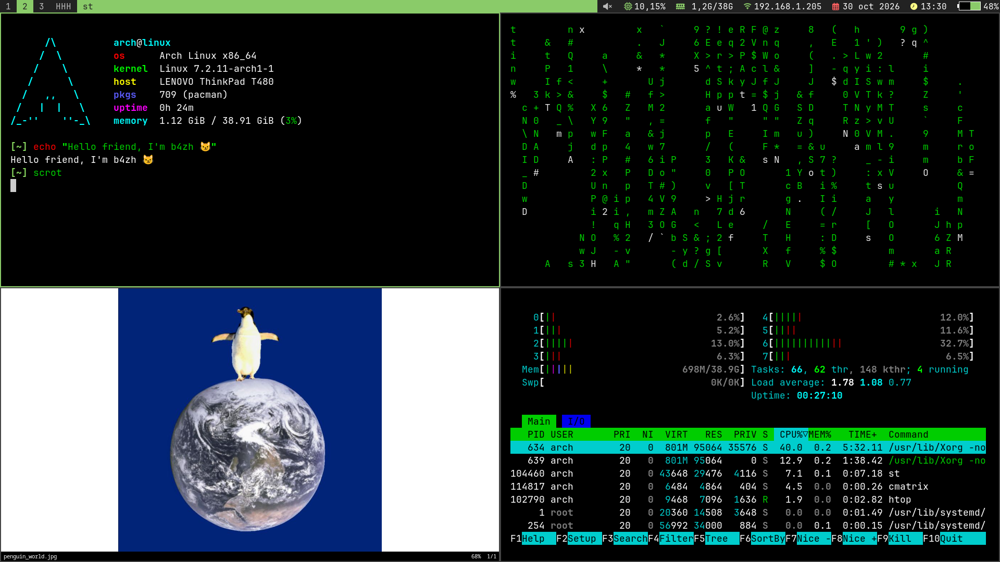

Blog
/
Linux
Mi humilde entorno Linux
30/10/2026
by
b4zh
-----
Mi entorno se compone de lo siguiente:
Distro:
Arch Linux
Gestor de ventanas:
dwm
Emulador de terminal:
st
Barra de estado:
dwmblocks-async
Shell: bash +
ble.sh
Multiplexor:
dvtm
Gestor de sesiones de terminal:
abduco
Editor de texto: vim
Captura de pantalla:
